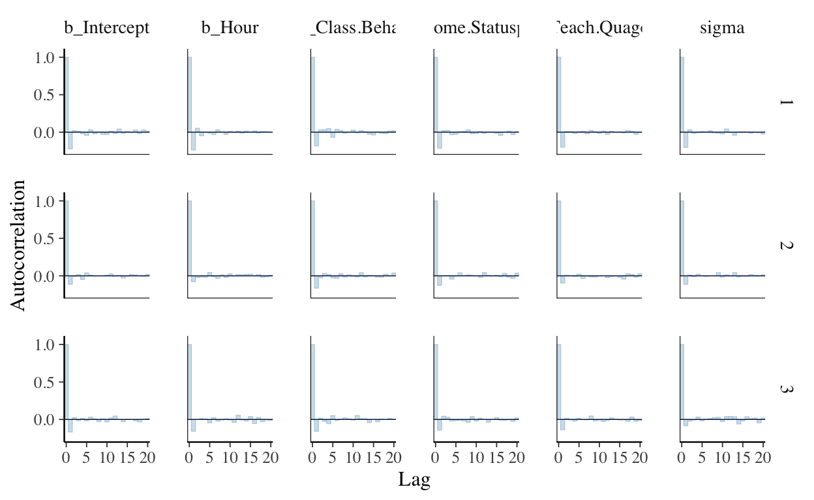
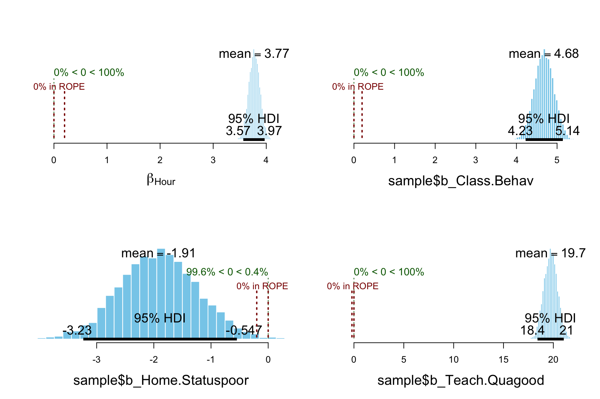
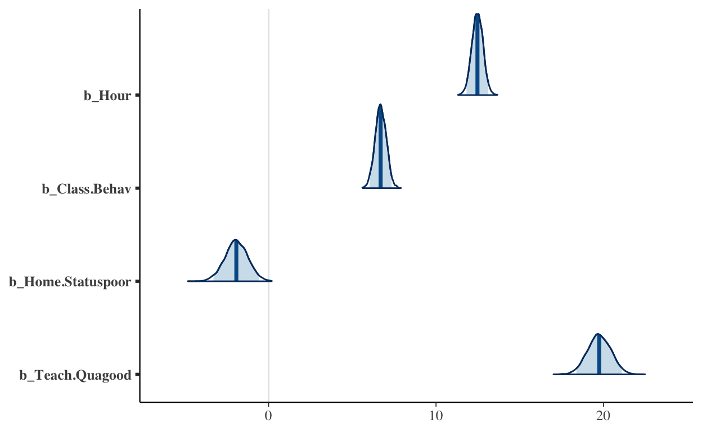

Bayesian modelling using brms package
ผู้เรียนจะเห็นว่าการระบุโมเดลในภาษา JAGS ข้างต้นจำเป็นต้องอาศัยความเชี่ยวชาญพอสมควร นอกจากนี้ยังค่อนข้างใช้เวลาในการเขียนโมเดลถึงแม้จะเป็นโมเดลพื้นฐานอย่าง one-way ANOVA ในข้างต้น ปัจจุบันมี package หลายตัวที่ทำหน้าที่เป็นส่วนต่อประสานระหว่างผู้ใช้กับ engine ต่าง ๆ ซึ่งใช้ภาษาที่เรียบง่ายกว่า ทำให้การ modelling ด้วยวิธีการแบบเบส์ทำได้สะดวกและง่ายขึ้น หัวข้อนี้จะกล่าวถึง package-brms (ย่อมาจาก bayesian multilevel models using stan) ซึ่งเป็น high-level API ตัวหนึ่งของภาษา Stan รายละเอียดมีดังนี้
โมเดลทั่วไปที่สามารถวิเคราะห์ได้ด้วย package-brms มีรูปแบบดังนี้
\(y_i \sim D(f(\eta_i),\theta)\)
เมื่อ \(y_i\) คือค่าสังเกตของตัวแปรตาม ที่มีการแจกแจง \(D\) ในโปรแกรม R จะเรียก \(D\) นี้ว่า family ในขณะที่ \(f(.)\) คือ link function, \(\theta\) คือพารมิเตอร์ของการแจกแจง \(D\) ซึ่งสามารถมีได้หลายตัวขึ้นอยู่กับการแจกแจงที่กำหนด และ \(eta_i\) คือผลรวมเชิงเส้นของตัวแปรอิสระซึ่งสามารถเขียนได้ในรูปทั่วไปดังนี้
\(\bf{\eta}=\bf{X}\beta+\bf{Z}u\)
\(\beta\) คือสัมประสิทธิ์ความถดถอยในระดับ individual ส่วน \(u\) คือสัมประสิทธิ์ความถดถอยในระดับกลุ่ม \(X\) และ \(Z\) คือ design matrix ของตัวแปรอิสระในระดับ individual และ กลุ่ม ตามลำดับ
นอกจากจะมีประสิทธิภาพที่ดีในด้านของอัลกอริทึม MCMC แล้ว Stan ยังสามารถกำหนด prior distribution ได้มีประสิทธิภาพมากกว่าใน JAGS รวมถึง BUGS ด้วย รายละเอียดไปอ่านเอง ไม่อ่านก็ตามใจ
individual-level reg coef —> flat prior
group-level reg coef —> \(\bf{u} \sim N(\bf{0},\Sigma)\)
เมื่อ \(\Sigma\) คือเมทริกซ์ความแปรปรวนร่วม ซึ่งเป็นไปได้ทั้ง diagonal matrix และ symmetry matrix ขึ้นอยู่กับการกำหนด prior distribution ของเมทริกซ์ความแปรปรวนร่วมดังกล่าว นอกจากนี้ยังสามารถ model ให้ group-level reg coef นี้มีการแจกแจงที่เป็นอิสระไปตามกลุ่มได้อีกด้วย —> \(\bf{u}_j \sim N(\bf{0},\Sigma_j)\)
โดยปกติ prior distribution ของ covariance matrix จะกำหนดให้เป็นการแจกแจงแบบ Inverse-Wishart ซึ่งเป็น conjugacy prior กับ exponential family ต่าง ๆ และทำให้อัลกอริทึม Gibb-samplers มีประสิทธิภาพสูง อย่างไรก็ตามใน Stan ไม่จำเป็นต้องกำหนดการแจกแจงในลักษณะดังกล่าว ทำให้การกำหนด prior ของพารามิเตอร์นี้ทำได้ง่ายและมีความหมายที่เข้าใจได้ชัดเจนมากขึ้น ดังนี้
กำหนดให้ \(\Sigma_k=D(\sigma_k)\Omega_kD(\sigma_k)\)
เมื่อ \(D(\sigma_k)\) คือ diagonal matrix ของส่วนเบี่ยงเบนมาตรฐานของ \(u_k\) ส่วน \(\Omega\) คือเมทริกซ์สหสัมพันธ์ของพารามิเตอร์ \(\bf{u}\) ดังกล่าว Lewandowski และคณะ (2009) เสนอให้กำหนด prior ของเมทริกซ์สหสัมพันธ์นี้เป็น LKJ-Correlation prior ที่มีพารามิเตอร์ \(\zeta>0\) กล่าวคือ \(\Omega \sim LKJ(\zeta)\)
ถ้า \(\zeta=1\) (ค่าเริ่มต้น) การแจกแจงจะมีลักษณะเป็น uniform บน correlation matrix
ถ้า \(\zeta>1\) การแจกแจงจะมีลักษณะลู่เข้าหา identity matrix ขึ้นอยู่กับค่าของ \(zeta\)
ถ้า \(0<\zeta<1\) การแจกแจงมีลักษณะเป็น U-shape กล่าวคือให้ค่าความน่าจะเป็นที่จะมีค่า correlation สูง
ส่วน \(\sigma_k\) สามารถกำหนด prior distribution แยกรายตัวหรือให้เหมือนกันทั้งหมดก็ได้ ค่าเริ่มต้นของ brms คือการแจกแจงทีแบบครึ่งเดียว (half-Student-t prior) ที่มีองศาความเป็นอิสระเท่ากับ 3
brms ยังสามารถ model ให้พารามิเตอร์ในระดับ individual กับ group มีความสัมพันธ์กันได้ด้วย โดยการแตกเมทริกซ์ \(\Sigma_k\) เป็นดังนี้ \(\Sigma_k=V_k \otimes A_k\) เมื่อ \(V_k\) คือเมทริกซ์ความแปรปรวนร่วมในระดับกลุ่ม (แทน \(\Sigma_k\) ตัวเดิม) และ \(A_k\) คือเมทริกซ์ความแปรปรวนร่วมของพารามิเตอร์ระหว่างระดับ individual กับ group
อย่างที่กล่าวไว้ก่อนหน้าแล้วว่า brms ที่ใช้ Stan เป็น engine นั้นมีอัลกอริทึมประมาณค่าพารามิเตอร์ที่มีประสิทธิภาพสูงกว่า JAGS และ BUGS ในแง่ของคุณภาพของตัวอย่างพารามิเตอร์ที่ได้จาก MCMC กล่าวคือตัวอย่างที่ได้จะลู่เข้าหาการแจกแจงความน่าจะเป็นภายหลังได้อย่างรวดเร็ว และมีความค่าอัตสหสัมพันธ์ต่ำ ทำให้ผู้วิเคราะห์ไม่จำเป็นต้องรันลูกโซ่ยาวมากเหมือนกับ Gibb-sampler ใน JAGS และ BUGS อย่างไรก็ตามหากเปรียบเทียบกันต่อรอบ Stan จะใช้เวลามากกว่าในการจำลองตัวอย่าง
ผู้เรียนได้ติดตั้ง package-brms ลงในเครื่องแล้ว ตัวอย่างต่อไปนี้จะแสดงการรัน regression model ชุดข้อมูลที่ใช้เป็นตัวอย่างอยู่ในไฟล์ regression_dat1.csv ดังนี้
dat<-read.csv("/Users/siwachoat/Documents/myblog/myblog/_posts/2022-02-19-glm1/regression_dat1.csv")
head(dat)
X Hour Class.Behav Home.Status Teach.Qua Score
1 1 6 3.3 poor bad 39.8
2 2 11 3.7 poor bad 59.6
3 3 6 4.8 poor good 50.8
4 4 11 3.7 normal bad 50.9
5 5 10 1.3 poor good 67.9
6 6 2 3.1 normal bad 26.0การประมาณค่าพารามิเตอร์ด้วย package-brms จะสั่งงานผ่านฟังก์ชัน brm() ซึ่งมีอาร์กิวเมนท์สำคัญได้แก่ formula สำหรับระบุรูปแบบของโมเดล อย่างที่กล่าวในข้างต้นว่าขอบเขตของโมเดลเป็นไปได้ทั้ง โมเดลเชิงเส้น โมเดลเชิงเส้นแบบวางนัยทั่วไป และสามารถวิเคราะห์ได้ทั้งแบบโมเดลระดับเดียว และโมเดลพหุระดับ อาร์กิวเมนท์ data ใช้ระบุชุดข้อมูลสำหรับวิเคราะห์ family ใช้ระบุการแจกแจงของตัวแปรตามในโมเดลการวิเคราะห์ การแจกแจงดังกล่าวจะอยู่ภายใต้การแจกแจงในกลุ่มวงศ์ชี้กำลัง (exponential family) เช่น normal distribution, binomial, poisson เป็นต้น ส่วนที่เหลือเป็นอาร์กิวเมนท์ที่เกี่ยวข้องกับกระบวนการ MCMC ได้แก่ warmup หรือระยะ burn-in อาร์กิวเมนท์ iter สำหรับระบุจำนวนรอบที่ต้องการทวนซ้ำ (iteration) อาร์กิวเมนท์ chains ใช้ระบุจำนวนลูกโซ่ที่ต้องการสร้าง เป็นต้น รายละเอียดของฟังก์ชันสามารถเรียกดูได้โดยพิมพ์คำสั่ง ?brm()
ตัวอย่างด้านล่างแสดงการเขียนคำสั่งเพื่อประมาณการแจกแจง posterior ในโมเดล multiple regression โดยใช้ข้อมูลตัวอย่างข้างต้น
ขั้นตอนการดำเนินงานสำคัญของการใช้ MCMC ในการประมาณ posterior distribution ของพารามิเตอร์คือ การตรวจสอบคุณภาพของลูกโซ่ที่สร้างขึ้น หรือที่เรียกว่าการตรวจสอบการลู่เข้าของลูกโซ๋ ผู้วิเคราะห์สามารถใช้ฟังก์ชัน plot() และ summary() เพื่อเรียกดูผลลัพธ์เบื้องต้นได้โดยง่าย ดังตัวอย่างด้านล่าง
plot(fit.reg, N=3,
theme=theme(text=element_text(family="ChulaCharasNew")))
summary(fit.reg)
Family: gaussian
Links: mu = identity; sigma = identity
Formula: Score ~ Hour + Class.Behav + Home.Status + Teach.Qua
Data: dat[, -1] (Number of observations: 400)
Draws: 3 chains, each with iter = 3000; warmup = 1000; thin = 1;
total post-warmup draws = 6000
Population-Level Effects:
Estimate Est.Error l-95% CI u-95% CI Rhat Bulk_ESS
Intercept -3.49 1.04 -5.52 -1.46 1.00 8649
Hour 3.77 0.10 3.58 3.98 1.00 8680
Class.Behav 4.68 0.24 4.22 5.14 1.00 8410
Home.Statuspoor -1.91 0.69 -3.25 -0.56 1.00 7898
Teach.Quagood 19.74 0.68 18.43 21.09 1.00 8157
Tail_ESS
Intercept 4475
Hour 4820
Class.Behav 4537
Home.Statuspoor 4857
Teach.Quagood 4670
Family Specific Parameters:
Estimate Est.Error l-95% CI u-95% CI Rhat Bulk_ESS Tail_ESS
sigma 6.68 0.24 6.24 7.17 1.00 8144 4545
Draws were sampled using sampling(NUTS). For each parameter, Bulk_ESS
and Tail_ESS are effective sample size measures, and Rhat is the potential
scale reduction factor on split chains (at convergence, Rhat = 1).ผลการวิเคราะห์ทั้งจากแผนภาพความหนาแน่น แผนภาพร่องรอย และผลการวิเคราะห์เชิงตัวเลขสนับสนุนว่าตัวอย่างของพารามิเตอร์ที่สร้างขึ้นจากกระบวนการ MCMC นี้มีแนวโน้มลู่เข้าสู่การแจกแจงความน่าจะเป็นเดียวกัน บ่งชี้ว่าตัวอย่างพารามิเตอร์ดังกล่าวมีคุณภาพ
การสร้างแผนภาพสามารถทำได้หลายวิธี อันนี้ก็เป็นอีกวิธีหนึ่งที่ใช้ฟังก์ชัน stanplot() ที่มีมาให้ใน package
stanplot(fit.reg, type="trace")
stanplot(fit.reg, type="dens_overlay")
stanplot(fit.reg, type="acf_bar")

ผู้วิเคราะห์สามารถตรวจสอบความเหมาะสมของโมเดลได้ง่าย ๆ ดังนี้
#posterior predictive
pp_check(fit.reg, resp = "Score")
#bayesian R2
bayes_R2(fit.reg)
Estimate Est.Error Q2.5 Q97.5
R2 0.8693854 0.004554122 0.8593896 0.8772761#loo index
loo(fit.reg)
Computed from 6000 by 400 log-likelihood matrix
Estimate SE
elpd_loo -1330.0 13.9
p_loo 6.4 0.5
looic 2659.9 27.9
------
Monte Carlo SE of elpd_loo is 0.0.
All Pareto k estimates are good (k < 0.5).
See help('pareto-k-diagnostic') for details.waic(fit.reg)
Computed from 6000 by 400 log-likelihood matrix
Estimate SE
elpd_waic -1330.0 13.9
p_waic 6.4 0.5
waic 2659.9 27.9เราสามารถปรับเปลี่ยน prior ได้หลายวิธีการ วิธีการหนึ่งคือการเรียกค่าเริ่มต้นของ prior มาก่อน แล้วปรับเปลี่ยนทีละตัวตามต้องการดังนี้
prior class coef group resp dpar
(flat) b
(flat) b Class.Behav
(flat) b Home.Statuspoor
(flat) b Hour
(flat) b Teach.Quagood
student_t(3, 35.8, 19.2) Intercept
student_t(3, 0, 19.2) sigma
nlpar bound source
default
(vectorized)
(vectorized)
(vectorized)
(vectorized)
default
defaultจากผลลัพธ์ข้างต้นแสดงให้เห็น default prior ของ brms-packages จำแนกเป็น prior ของ slope parameters ใช้สัญลักษณ์ b กำหนดเป็น flat prior ส่วน intercept และ sigma กำหนดเป็น student’s t priors ในกรณีที่ต้องการเปลี่ยน prior ของพารามิเตอร์ภายในโมเดลสามารถทำได้โดยการ assign prior ใหม่ดังตัวอย่างต่อไปนี้
priors$prior[2:5]<-c("normal(0,100)","normal(2,5)","normal(5,5)","normal(0,100)") #mu and sd
priors
prior class coef group resp dpar
(flat) b
normal(0,100) b Class.Behav
normal(2,5) b Home.Statuspoor
normal(5,5) b Hour
normal(0,100) b Teach.Quagood
student_t(3, 35.8, 19.2) Intercept
student_t(3, 0, 19.2) sigma
nlpar bound source
default
default
default
default
default
default
defaultจากนั้นนำ prior ที่กำหนดใหม่นี้ไปกำหนดใน argument prior ของฟังก์ชัน brm() ดังนี้
fit.reg2
Family: gaussian
Links: mu = identity; sigma = identity
Formula: Score ~ Hour + Class.Behav + Home.Status + Teach.Qua
Data: dat[, -1] (Number of observations: 400)
Draws: 3 chains, each with iter = 3000; warmup = 1000; thin = 1;
total post-warmup draws = 6000
Population-Level Effects:
Estimate Est.Error l-95% CI u-95% CI Rhat Bulk_ESS
Intercept -3.51 1.04 -5.57 -1.46 1.00 8081
Hour 3.77 0.10 3.57 3.97 1.00 8678
Class.Behav 4.68 0.24 4.21 5.15 1.00 6901
Home.Statuspoor -1.85 0.68 -3.19 -0.53 1.00 7657
Teach.Quagood 19.73 0.68 18.39 21.05 1.00 8894
Tail_ESS
Intercept 4777
Hour 4884
Class.Behav 4634
Home.Statuspoor 5160
Teach.Quagood 5057
Family Specific Parameters:
Estimate Est.Error l-95% CI u-95% CI Rhat Bulk_ESS Tail_ESS
sigma 6.69 0.24 6.22 7.17 1.00 7436 4168
Draws were sampled using sampling(NUTS). For each parameter, Bulk_ESS
and Tail_ESS are effective sample size measures, and Rhat is the potential
scale reduction factor on split chains (at convergence, Rhat = 1).ผู้วิเคราะห์สามารถทดสอบสมมุติฐานของพารามิเตอร์ที่ต้องการในโมเดลได้ โดยใช้วิธีการเปรียบเทียบ test value กับ HDI โดยใช้ฟังก์ชัน hypothesis() ดังตัวอย่างต่อไปนี้
hypothesis(fit.reg, "Hour>0", class="b", alpha=0.05)
Hypothesis Tests for class b:
Hypothesis Estimate Est.Error CI.Lower CI.Upper Evid.Ratio
1 (Hour) > 0 3.77 0.1 3.61 3.94 Inf
Post.Prob Star
1 1 *
---
'CI': 90%-CI for one-sided and 95%-CI for two-sided hypotheses.
'*': For one-sided hypotheses, the posterior probability exceeds 95%;
for two-sided hypotheses, the value tested against lies outside the 95%-CI.
Posterior probabilities of point hypotheses assume equal prior probabilities.hypothesis(fit.reg, "Home.Statuspoor<0", class="b" ,alpha=0.05)
Hypothesis Tests for class b:
Hypothesis Estimate Est.Error CI.Lower CI.Upper
1 (Home.Statuspoor) < 0 -1.91 0.69 -3.02 -0.77
Evid.Ratio Post.Prob Star
1 239 1 *
---
'CI': 90%-CI for one-sided and 95%-CI for two-sided hypotheses.
'*': For one-sided hypotheses, the posterior probability exceeds 95%;
for two-sided hypotheses, the value tested against lies outside the 95%-CI.
Posterior probabilities of point hypotheses assume equal prior probabilities.ผู้วิเคราะห์สามารถแปลงผลการวิเคราะห์ที่ได้ใช้เป็น mcmc objects แล้วไปวิเคราะห์แบบเดิมก็ได้ดังนี้
sample<-as.data.frame(fit.reg)
library(bayesboot)
par(mfrow=c(2,2))
plotPost(sample$b_Hour, compVal=0, cenTend="median", ROPE=c(0,0.2), credMass=0.95,
xlab=expression(beta[Hour]))
plotPost(sample$b_Class.Behav, compVal=0, cenTend="median", ROPE=c(0,0.2), credMass=0.95)
plotPost(sample$b_Home.Statuspoor, compVal=0, cenTend="median", ROPE=c(-0.2,0), credMass=0.95)
plotPost(sample$b_Teach.Quagood, compVal=0, cenTend="median", ROPE=c(-0.2,0), credMass=0.95)

เราสามารถสร้าง output เพื่อเปรียบเทียบขนาดอิทธิพลของตัวแปรอิสระที่มีต่อตัวแปรตามได้ด้วยฟังก์ชัน stanplot() อย่างไรก็ตามสัมประสิทธิ์ความชันที่นำมาเปรียบเทียบกันต้องเป็นสัมประสิทธิ์ความถดถอยในสเกลคะแนนมาตรฐาน อย่างไรก็ตาม brms-package ไม่ได้ให้ output ส่วนนี้มาการแก้ปัญหาคือผู้วิเคราะห์จะต้องสร้าง output เอง เช่น
stanplot(fit.reg_standard,
variable=c("b_Hour","b_Class.Behav","b_Home.Statuspoor","b_Teach.Quagood"),
type="areas",
prob = 0.95)

อีกลักษณะหนึ่งสามารถทำได้โดยใช้ package-tidybayes ช่วย สามารถอ่านเพิ่มเติมได้จาก ไม่อ่านก็ตามใจ
ชุดข้อมูลตัวอย่างประกอบด้วยข้อมูลของตัวแปรตามคือผลสัมฤทธิ์ทางการเรียนวิชาคณิตศาตร์ (Math) ตัวแปรอิสระได้แก่ วิธีการสอน (Method) และความสามารถทางเทคโนโลยี (Tech)
การวิเคราะห์โมเดลในกลุ่ม BGLMs สามารถระบุโมเดลและวิเคราะห์ในทำนองเดียวกับการวิเคราะห์ BGLM ความแตกต่างระหว่าง BGLM กับ BGLMs คือ ค่าสังเกตของ BGLMs มีการแจกแจงไม่ใช่การแจกแจงแบบปกติ และจำเป็นต้องใช้ link function เพื่อแปลงค่าของพารามิเตอร์ในการแจกแจงของค่าสังเกต ให้อยู่ในรูปแบบของโมเดลเชิงเส้นเพื่อให้พารามิเตอร์ที่ผ่านการแปลงแล้วมีความหมาย และสามารถใช้บรรยายความสัมพันธ์ระหว่างตัวแปรที่ต้องการได้
โมเดล glms สามารถนิยามในรูปแบบทั่วไปได้ดังนี้ กำหนดให้ \(y_i\) เมื่อ \(i=1,2,3,...,n\) เป็นค่าสังเกตของตัวแปรตามที่มีการแจกแจงอยู่ในวงศ์ชี้กำลัง (exponential family) โดยที่
\(E[y_i]=\mu_i=g^{-1}(\eta_i)\), \(\eta_i=\beta_0+\beta_1x_{1i}+...+\beta_kx_{ki}\)
จากนิยามข้างต้นจะเห็นว่า การกำหนด link function \(g(.)\) ที่เหมาะสม จะช่วยแปลงพารามิเตอร์ในการแจกแจงของค่าสังเกต \(y_i\) ให้อยู่ในรูปแบบของสมการเชิงเส้นตรงได้ เช่นใน binomial model ที่มีพารามิเตอร์กำกับการแจกแจงคือ ความน่าจะเป็นของการเกิดเหตุการณ์ที่สนใจ \(\theta\) สามารถกำหนด link function ได้เป็น logit function \(logit(\theta)=log(\theta/(1-\theta))\) หรือ probit function \(\Phi^{-1}(\theta)\) ที่เป็น inverse ของ cumulative normal probability function เป็นต้น เรียกอัตราส่วน \(\theta/(1-\theta)\) ว่า odd ของการเกิดเหตุการณ์ โดยถ้า
odd > 1 แสดงว่า โอกาสที่จะเกิดเหตุการณ์ \(y=1\) มีมากกว่าไม่เกิด
odd = 1 แสดงว่า โอกาสของการเกิดเหตุการ์กับไม่เกิดมีเท่ากัน
odd < 1 แสดงว่า โอกาสของการเกิดเหตุการณ์ \(y=1\) มีน้อยกว่าไม่เกิด
ใน binomial model เนื่องจาก \(y_i\) มีค่าที่เป็นไปได้ 2 ค่าได้แก่ 0, 1 ดังนั้นค่าเฉลี่ยของ \(y\) จึงมีค่าเป็นสัดส่วนหรือความน่าจะเป็นของการเกิดค่าสังเกต \(y=1\) กล่าวคือ \(E[y_i]=\theta\) ดังนั้น
\(g(E[y_i])=\eta_i \implies logit(\theta)=\eta_i=\beta_0+\beta_1x_{1i}+...+\beta_kx_{ki}\)
จากความหมายของ logit function และสมการ logit ในข้างต้น จะเห็นว่า เราสามารถเขียน odd ในรูปของสมการเชิงเส้นของตัวแปรอิสระที่เลือกมาใช้ในโมเดลทำนายได้ดังนี้
\(odd = \frac{\theta}{1-\theta}=exp(\beta_0+\beta_1x_{1i}+...+\beta_kx_{ki})\)
สมการข้างต้นสามารถใช้อธิบายอิทธิพลของตัวแปรอิสระที่มีต่อโอกาสของการเกิดเหตุการณ์ที่สนใจได้ เมื่อกำหนดให้ตัวแปรอิสระอื่น ๆ คงที่ ดังนี้ สมมุติว่าสนใจการเปลี่ยนแปลงใน \(x_1\) โดยหากตัวแปรดังกล่าวเพิ่มขึ้นจากเดิมคือ \(x_1\) ไปเป็น \(x_{1}+1\) (เพิ่มขึ้น 1 หน่วย) แล้วค่า odd ของเหตุการณ์ที่สนใจจะเปลี่ยนแปลงไป วัดได้เป็นอัตราส่วนระหว่าง odd ของทั้งสอง conditions ดังนี้
\(\frac{odd_{x_1+1}}{odd_{x_1}}=\frac{exp(\beta_0+\beta_1(x_{1i}+1)+...+\beta_kx_{ki})}{exp(\beta_0+\beta_1x_{1i}+...+\beta_kx_{ki})}=exp(\beta_1)\)
เรียกว่า \(exp(\beta_1)\) ดังกล่าวว่า อัตราส่วนของ odds (odds ratio: OR) ค่าสถิตินี้จะใช้เพื่ออธิบายความสัมพันธ์/อิทธิพลของตัวแปรอิสระที่มีต่อโอกาสของการเกิดเหตุการณ์ โดย เมื่อกำหนดให้ปัจจัยอื่น ๆ คงที่
ถ้า OR > 1 หมายถึง X มีความสัมพันธ์ทางบวกกับโอกาสของการเกิดเหตุการณ์
ถ้า OR = 1 หมายถึง X ไม่มีความสัมพันธ์กับโอกาสของการเกิดเหตุการณ์
ถ้า OR < 1 หมายถึง X มีความสัมพันธ์ทางลบกับโอกาสของการเกิดเหตุการณ์
inverse ของ logit function เรียกว่า logistic function จากสมการ logit ข้างต้นจะได้ว่า
\(\theta_i=logit^{-1}(\eta_i)=\frac{1}{1+exp(\beta_0+\beta_1x_{1i}+...+\beta_kx_{ki})}\)
เรียกสมการข้างต้นว่า สมการถดถอย logistic ใช้คำนวณค่าความน่าจะเป็นของการเกิดเหตุการณ์ที่สนใจ
สมมุติว่า ผู้วิเคราะห์ต้องการวิเคราะห์ความสำเร็จในการเรียน online ของนักเรียน โดยใช้ตัวแปรได้แก่ จำนวนเวลาที่นักเรียนใช้ในการเข้ามาเรียน online ต่อครั้ง (Hours) ค่าเฉลี่ยของความถี่ในการเข้ามาเรียน online ต่อสัปดาห์ (Freq) และฐานนิยมของคุณภาพชิ้นงานที่นักเรียนทำส่งในระบบ online (Mode_Qua)
dat<-read.csv("/Users/siwachoat/Documents/myblog/myblog/_posts/2022-03-05-glm2/binomial.csv")
head(dat)
X success hour freq mode.qua
1 1 0 6 3.3 bad
2 2 1 11 3.7 bad
3 3 1 6 4.8 good
4 4 1 11 3.7 bad
5 5 1 10 1.3 good
6 6 0 2 3.1 baddim(dat)
[1] 400 5การวิเคราะห์ logistic regression ด้วย brms-package สามารถเขียนคำสั่งได้ดังนี้
Distill is a publication format for scientific and technical writing, native to the web.
Learn more about using Distill at https://rstudio.github.io/distill.